Actual Godot renders. Reference matching and deformation quality require visual review; technical test success is separate.
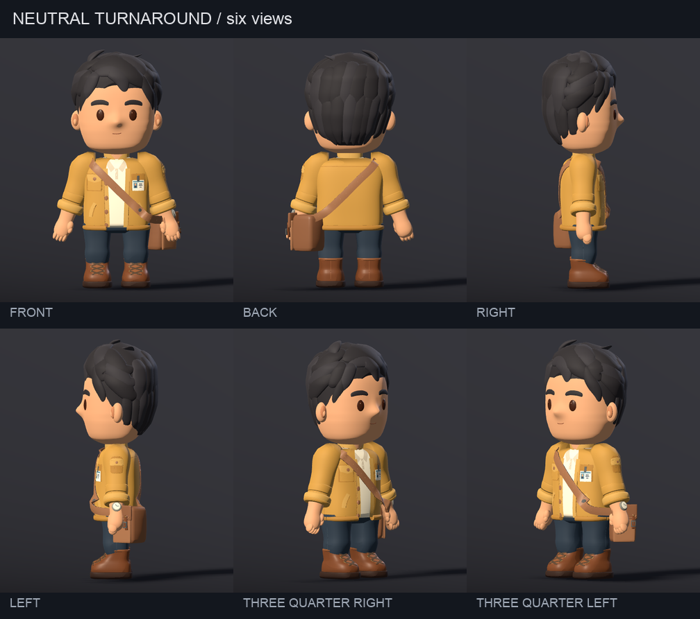
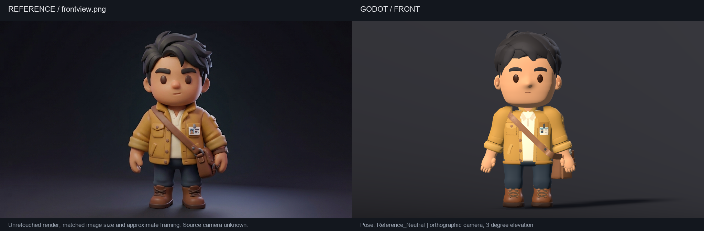
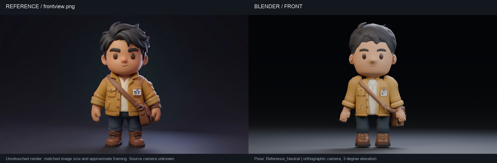
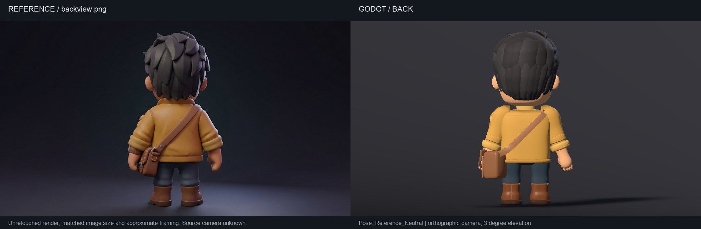
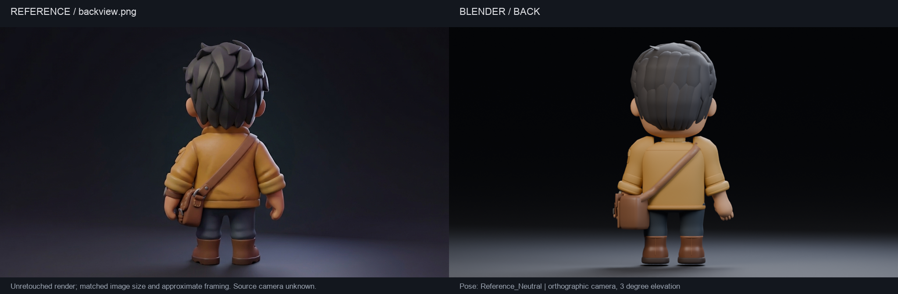
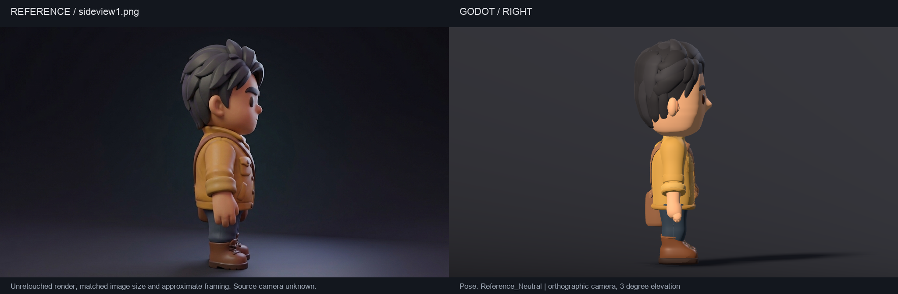
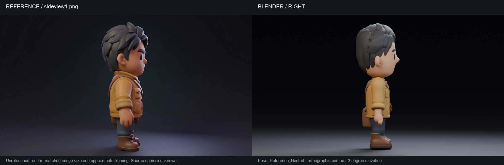
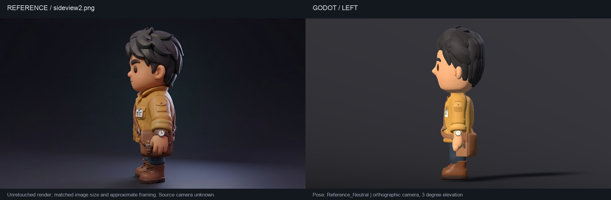
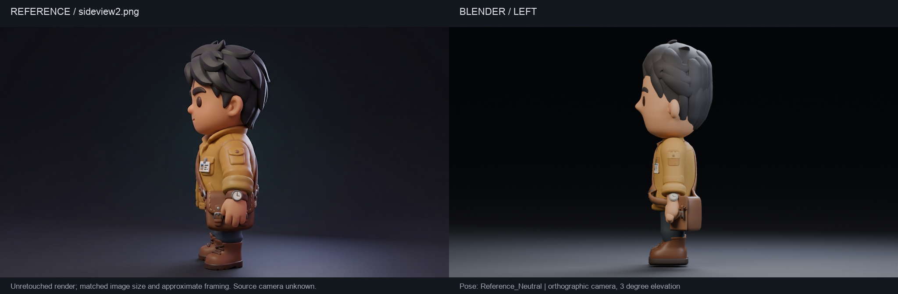
GIFs preserve clip duration with 18 evenly spaced frames. Click a montage to inspect all samples and three rear views.
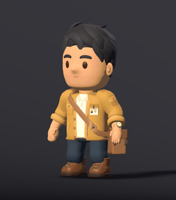
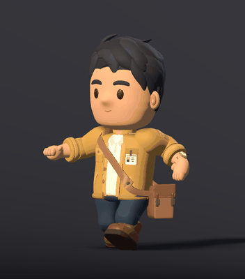
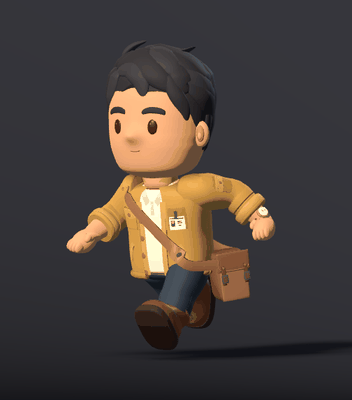
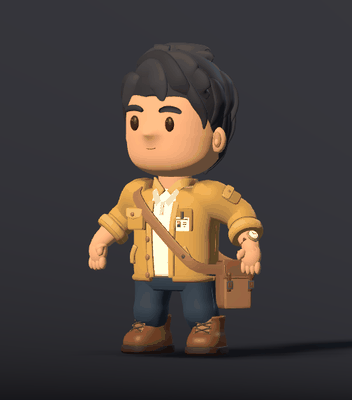
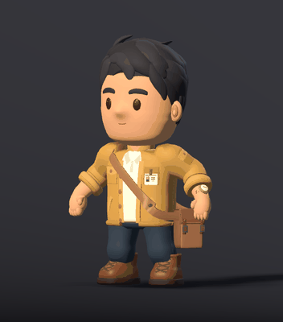
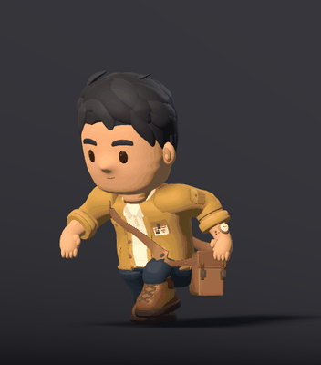
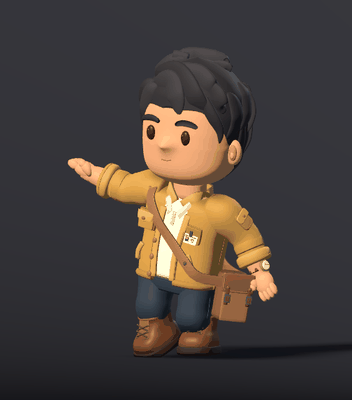
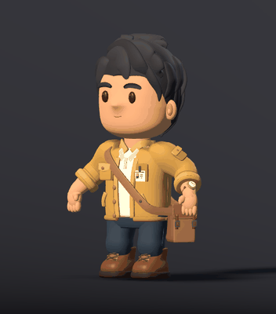
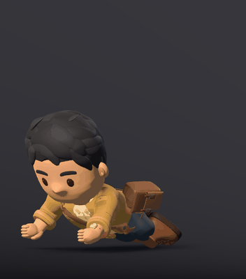
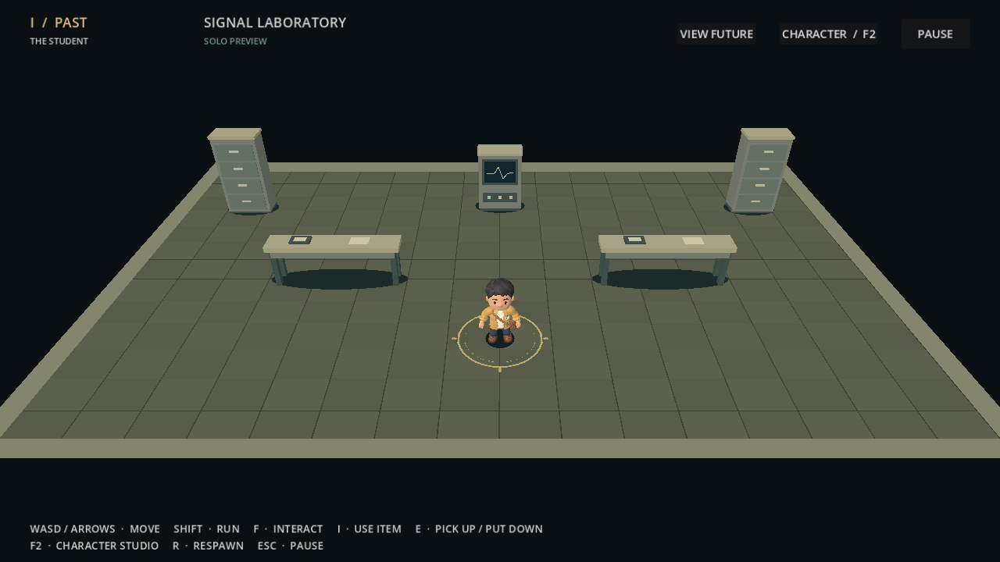
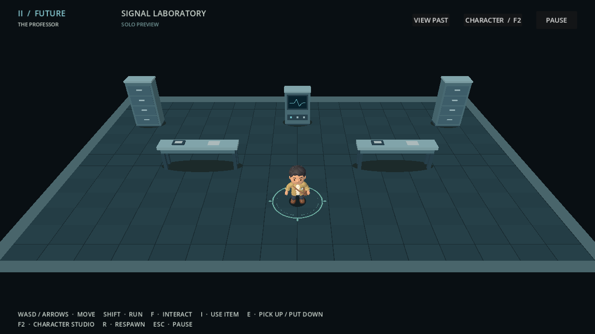
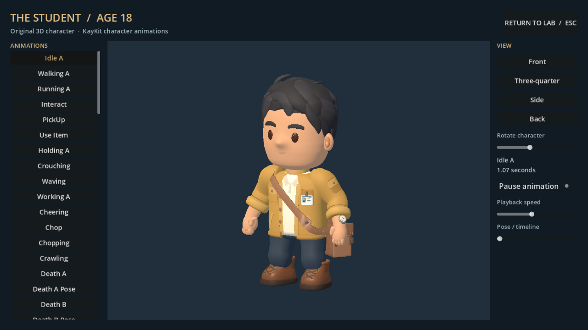